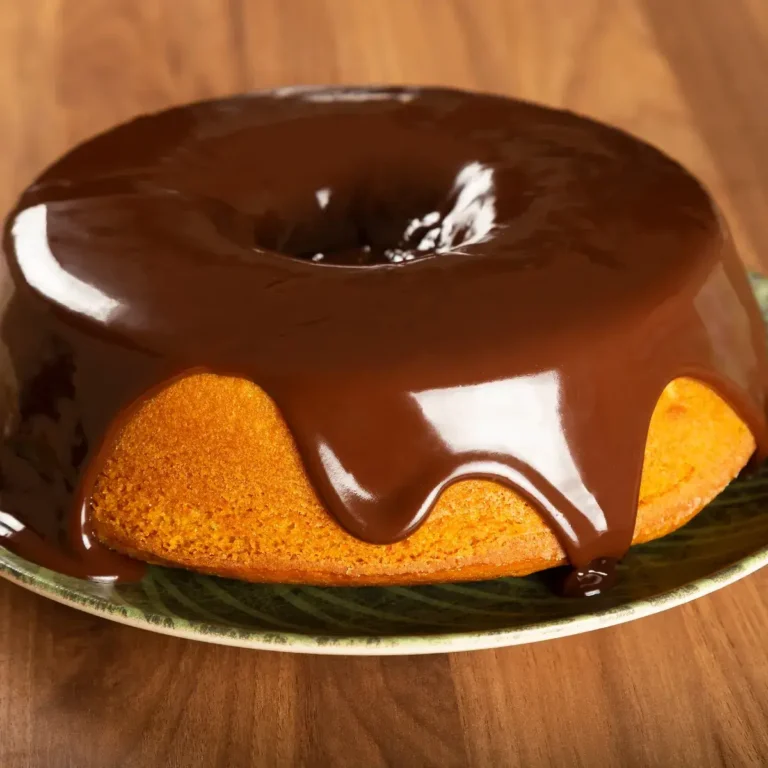

src : Source/fonte: É o caminho onde a imagem está hospedada/armazenada. Pode ser um caminho local ou um link direto da internet.
alt/alternative. É uma breve descrição de imagem. É crucial para acessibilidade e como fallback
Trabalhando com recursos externos
Configurando imagens externas
Outras Abordagens
Elemento Figure

Bolo de cenoura com cobertura de chocolate para café da tarde. -Foto: Liandra Lins
Elemento picture
Utilizamos o elemento < picture > serve para controlarmos qual arquivo será utilizado de acordo com determinadas condições.
Sobe os tipos de imagens
Você pode encontrar um acervo muito grande de tipos de imagens. A escolha de imagem certa pode elevar a perfomance do seu site. Veja a lista abaixo:
JPEG/JPG : Bom para fotografias, produtos fotografados, imagens com muitas cores e detalhes. Se você tentar otimizar demais, a perda de qualidade se torna visível.
PNG: Suporta transparência e é muito bom para imagnes que precisam preservar certos detalhes, como por exemplo: logos, imagens que precisam de transparencia e etc.
WEBP : Formato recente desenvolvido com foco na web. Além de também suportar transparência, também consegue trabalhar com imagens em alta definição. Excelente escolha para fotografias, imagens de produtos, imagnes com transparencia e imagens gerais.
AVIF : É um formato mais recente e também muito eficiente. É um excelente, para fotografia, imagens grandes, sites onde desempenho e economia de dados são extremamentes importantes
SVG É um elemento vetorial, excelente para logos, ícones, símbolos e etc.